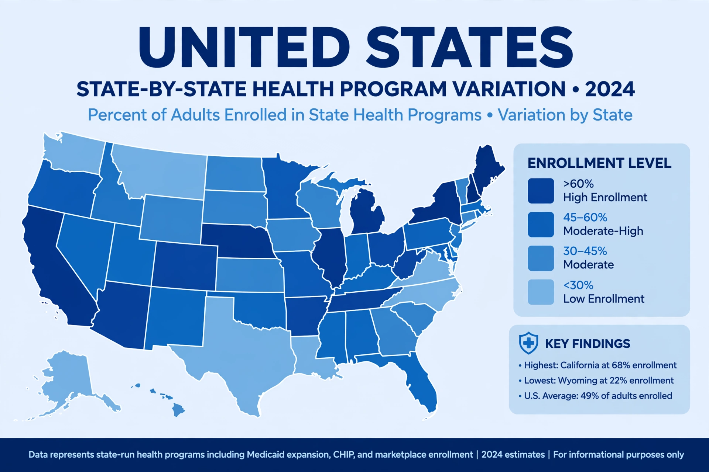

| Program type | Health insurance (means-tested) |
|---|---|
| Established | July 30, 1965 (Social Security Amendments of 1965) |
| Administered by | Centers for Medicare and Medicaid Services, with the states |
| Enrollment | Roughly 80–90 million people (including CHIP) |
Medicaid is a joint federal and state program in the United States that helps cover medical costs for some people with limited income and resources. It was established by the Social Security Amendments of 1965, the same legislation that created Medicare, and is administered by the states within broad federal guidelines set by the Centers for Medicare and Medicaid Services (CMS). Medicaid is the largest source of health coverage in the United States, covering low-income adults, children, pregnant women, elderly adults, and people with disabilities.

Historically, Medicaid eligibility was tied to categories such as families receiving cash assistance, pregnant women, children, and the disabled, and rules varied widely by state. The Affordable Care Act (2010) expanded eligibility to nearly all adults with incomes up to 138% of the federal poverty level. In National Federation of Independent Business v. Sebelius (2012), the Supreme Court made the expansion effectively optional for states, leading to a patchwork in which most states (40 plus the District of Columbia by 2023) adopted the expansion while a minority did not. The related Children's Health Insurance Program (CHIP), created in 1997, covers children in families with incomes too high for Medicaid.
The federal government matches state Medicaid spending at a rate (FMAP) ranging from 50% to about 77% depending on state per-capita income, with a 90% federal match for the ACA expansion population. Medicaid is jointly the largest expenditure in many state budgets, and it pays for a large share of long-term care, including roughly half of all nursing home spending, as well as a majority of births in many states.
Federally mandated benefits include inpatient and outpatient hospital services, physician services, laboratory and x-ray services, and nursing facility care; states may add optional benefits such as prescription drugs and dental care. Most enrollees now receive care through private managed-care organizations contracted by the states. Because provider payment rates tend to be lower than those of Medicare or private insurance, access to physicians willing to accept Medicaid patients can be limited.